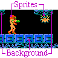
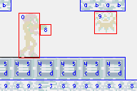
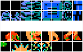
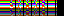
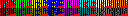

7. 精灵与背景概述
精灵与背景简介
虽然你可以做完全基于位图模式的游戏，但你会发现极少有游戏这样做。简单的原因是，所有图形都将由软件渲染。无论你的代码多好，那始终是个缓慢的过程。现在，我并不是说它做不到：GBA 上有几个 FPS（比如 Wolfenstein 和 Doom）。我是说，除非你愿意把代码优化到极致，否则你会很难做到。
绝大多数使用 GBA 的硬件图形，它有两种形式：精灵和图块背景（简称“background“或“bg“）。正如我在视频入门中所说，图块背景由一个图块矩阵（因此得名）构成，每个图块包含一个指向 8x8 像素位图的索引，这个位图被称为图块。所以最终屏幕上是一个图块矩阵。这里有四个这样的背景，大小从 128x128 像素（32x32 图块）到 1024x1024 像素（128x128 图块）不等。精灵是较小的对象，大小在 8x8 到 64x64 像素之间。一共有 128 个，你可以让它们彼此独立移动。像背景一样，精灵也是由图块构建的。
除了单纯的像素轰击，硬件还负责渲染的若干其他方面。首先，它使用颜色键控来排除某些像素显示（即，这些像素是透明的）。基本上，如果图块的像素值为零，它就是透明的。此外，硬件还负责许多其他效果，比如翻转、半透明混合，以及仿射变换如旋转和缩放。
诀窍在于设置好这个过程。需要留意的三个基本步骤是：控制、映射和图像数据。这些步骤的边界有点模糊，但用这种方式看待是有帮助的，因为它让你能把精灵和背景看作同一枚硬币的两面。而统一是件好事®。当然，差异仍然存在，只是体现在细节上。
本页宽泛地概述了我在接下来几页要讲的内容。如果你不能立即理解，别担心，那目前并不是重点。先让它渗入你的大脑，读完其他页面，你就能明白我在这里说的是什么了。
精灵与背景控制
渲染的第一步是控制。控制涵盖了作用在精灵或背景整体上的东西，比如这些东西本身的激活、是否使用 16 或 256 色图块，以及半透明混合和变换等效果。首先是你是否一开始就想要使用这些东西。这是通过在显示控制寄存器 REG_DISPCNT 中设置正确的位来完成的。一旦你做了这个，还有用于背景的进一步控制寄存器：REG_BGxCNT 寄存器（0400:0008h-0400:000Fh）。对于精灵，有对象属性内存，即 OAM，位于 0700:0000h。128 个精灵中每一个都有三个所谓的属性（因此叫 OAM），涵盖了精灵的控制和映射两方面。
精灵与背景映射
控制和映射之间有很多灰色地带，但还是来吧。映射关乎使用哪些图块以及它们去哪的一切。如前所述，精灵和背景的屏幕外观都是由图块并排排列构建的。你必须告诉 GBA 要 blit 哪些图块到什么位置。Fig 7.1a-c（下）阐释了这一点。在 fig 7.1b 中你看到图块。注意精灵和背景都有自己的一套图块。
在 fig 7.1c 中你看到这些图块是如何被使用的。背景使用一个图块地图，它工作起来就像一个普通的调色板位图，只是它是由屏幕块条目（带图块索引）而非像素（含颜色索引）组成的矩阵。抱歉，一个什么？！？屏幕块条目。是的，我知道这名字有点傻。问题是你需要把地图中的条目（屏幕块条目，简称 SE）和图像数据（实际图块）清楚区分开。不幸的是，“tile” 这个词常用来指两者。我会坚持用 tile 指实际图形信息，而由于图块地图存放在叫屏幕块的东西里，地图数据就叫屏幕块条目或 SE。总之，每个 SE 有自己的图块索引。它还包含用于水平翻转和垂直翻转的位，如果是 16 色背景，还有一个调色板组的索引。不过在 fig 7.1c 中，你只看到图块索引。
对于精灵，有点不同，但基本步骤不变。你给整个精灵一个图块索引；GBA 然后通过查看精灵的形状和大小以及精灵映射模式来推算出要用的其他图块。我会在后面解释这是什么意思；只说映射模式是 1D 或 2D，取决于 REG_DISPCNT{6} 就够了。在本例中，我用了 1D 映射，它规定一个精灵应使用的图块是连续的。像背景一样，还有用于 16 色精灵的额外翻转标志和调色板信息。与背景不同，这些作用于整个精灵，而非仅一个图块。而且，精灵的组成图块总是相邻的，所以你可以有点想象力地把一个精灵看作一个微型的图块背景。
属于映射步骤的还有仿射变换矩阵（如果有）。用这个 2x2 矩阵你可以旋转、缩放或错切精灵或背景。关于它如何工作似乎有大量的困惑，所以我写了详细的数学描述来解释它是如何运作的。底线：矩阵从屏幕空间映射到纹理空间，而不是反过来。尽管所有参考文档都以迂回的方式说明了这一点，但迄今为止我看到的几乎所有旋转-缩放矩阵都是不正确的。如果你的代码基于 PERN 的，你的很可能也是。
|
 Fig 7.1a: 背景上的 2 个精灵。 |
 Fig 7.1c: 背景和精灵的图块用法。 背景每个 SE 一个图块，精灵则是左上角图块。 为清晰起见省略了默认图块（索引 0）。 |
|
 Fig 7.1b: 背景（上）和 精灵（下）图块。 |
精灵与背景图像数据
图像数据是 GBA 实际用来生成图像的。这意味着两样东西：图块和调色板。
图块
精灵和背景由一个叫图块的较小位图矩阵组成。你基本的图块是一个 8x8 位图。图块有 4bpp（16 色 / 16 个调色板）和 8bpp（256 色 / 1 个调色板）两种变体。类比浮点数，我称它们为s-图块（单尺寸图块）和d-图块（双尺寸图块）。一个 s-图块长 32（20h）字节，一个 d-图块 64（40h）字节。默认的图块类型是 4bpp 变体（s-图块）。如果我说图块而不提哪种类型，那要么无所谓，要么就是 s-图块。只要注意上下文就好。
有时人们误解了“以图块工作“真正意味着什么。在图块模式中，VRAM 不是一个从中选取图块的大位图，而是一堆 8x8 像素位图（即，图块）的集合。理解这两种方法的区别很重要！考虑一个大位图中的 8x8 矩形，和一个 8x8 图块。在大位图中，前 8 个像素之后的数据包含同一条扫描线的接下来 8 个像素；“图块“的下一行可以在更远处找到。在图块模式中，图块的下一扫描行紧跟当前行。
基本上，在图块模式下 VRAM 工作为一个 8×N·8 的位图。因为这么小的宽度用起来不实际，它们通常还是被呈现为更宽的位图。一个例子是 VBA 的图块查看器，它把字符块显示为 256x256 的位图；我在 fig 7.2a 中做了类似的事。重要的是记住这些并不能准确模仿 VRAM 的内容；要重现 VRAM 的实际内容，你需要像 fig 7.2b 那样的东西，但，当然，没谁会疯到用那种方式编辑位图。很可能你需要一个能把位图拆成 8x8 块的工具。或者把它重排成宽度为 8 像素的位图，本质上是一回事。
像所有位图一样，让精灵和背景的图块位深与 VRAM 中数据的位深对应是程序员的责任（意思是你！）。如果不同步，fig 7.2a 那样的东西可能会显示为 fig 7.2c。这种事迟早可能发生，因为所有图形在使用前都需要在系统外转换；一个放错位置的转换选项就足以酿成。
|
Fig 7.2a: 8bpp 图块。
|
 Fig 7.2b: 8bpp 图块作为位图。 |
|
 Fig 7.2c: fig 7.2a 的数据，被解释为 4bpp 数据。 如果你看到像这样的东西（你会的），现在你知道为什么了。 |
|
图块图形注意事项
记住并理解以下几点：
- 每个图块的数据是顺序存储的，下一组 8 个像素紧跟上一行之后。VRAM 基本上是一个宽 8 像素的大位图。图形转换器应该能把更大的位图转换成这种格式。
- 一如既往，留意你的位深。
图形转换器小技巧
如果你想做自己的转换工具，这里有个小技巧能帮你处理图块。分阶段工作；不要直接从普通的线性位图写到数据文件。创建一个平铺函数，它接受一个位图并把图块排成宽 1 个图块、高 H 个图块的位图。然后它可以正常导出。如果你允许可变的图块宽度（不把 8 像素宽度写死），你也可以把它用于其他目的。例如，要创建 16x16 精灵，先用 width=16 排列，再用 width=8。
图块块（又称字符块）
所有图块都存储在字符块中。尽管我很希望它们被称为 tile-block（图块块），因为那正是它们所由之组成的块，但传统上图块被称为字符（不要与编程类型的字符：一个 8 位整数混淆），所以这些家伙被称为 charblock。每个字符块长 16kb（4000h 字节），所以有 512（4000h/20h）个 s-图块或 256（4000h/40h）个 d-图块的空间。你也可以把字符块看作图块的矩阵；s-图块是 32x16，d-图块是 16x16（或 32x8）。整个 96kb 的 VRAM 可以看作 6 个字符块。
如前所述，有 6 个图块块，即 4 个用于背景（0-3）和 2 个用于精灵（4-5）。对于图块背景，图块计数从一个给定的字符基块（字符基的块，简称 CBB）开始，由 REG_BGxCNT{2-3} 指示。精灵图块索引总是从较低的精灵块（块 4，从 0601:0000h 开始）开始。
如果图块索引用背景和精灵同样的方案就好了，但事实并非如此。对于精灵，编号总是遵循 s-图块（20h 偏移），即使是 d-图块，但背景坚持它们指示的图块大小：4bpp 模式下 20h 偏移，8bpp 模式下 40h 偏移。
背景与精灵的图块索引
精灵的图块索引之间总是相隔 32 字节，背景图块索引使用 32 或 64 字节偏移，取决于它们设置的位深。
现在，常规背景和精灵都有 10 位用于图块索引。这意味着 1024 个允许的索引。由于每个字符块包含 512 个 s-图块，你不仅能访问基块，也能访问它后面的那个块。而如果你的背景用 d-图块，你实际上能访问总共四个块！现在，由于图块背景可以从四个背景字符块中的任何一个开始计数，你可能会想尝试也用精灵字符块（块 4 和 5）。在我测试过的模拟器上，这确实能工作。然而，在真实 GBA 上，它不行。这正是你需要在真实硬件上测试的原因之。关于这个主题的更多内容，见背景图块微妙之处和 cbb_demo。
关于可用字符块你需要知道的另一件事是，在某种位图模式中，位图会延伸到较低的精灵块中。因此，在这种情况下，你只能使用较高的精灵块（包含图块 512 到 1023）。
多亏了 typedef 这个美妙的概念，你可以为图块和字符块定义类型，这样就能通过简单的数组访问快速得出图块的地址。另一种方法是使用宏或内联函数来计算正确的地址。不过，最终你选哪种方法几乎无所谓。当然，typedef 方法允许使用 sizeof 运算符，当你需要复制一定数量的图块时会很方便。而且，结构体复制比简单循环更快，需要的 C 代码也更少。
// tile 8x8@4bpp: 32bytes; 8 ints
typedef struct { u32 data[8]; } TILE, TILE4;
// d-tile: double-sized tile (8bpp)
typedef struct { u32 data[16]; } TILE8;
// tile block: 32x16 tiles, 16x16 d-tiles
typedef TILE CHARBLOCK[512];
typedef TILE8 CHARBLOCK8[256];
#define tile_mem ( (CHARBLOCK*)0x06000000)
#define tile8_mem ((CHARBLOCK8*)0x06000000)
//In code somewhere
TILE *ptr= &tile_mem[4][12]; // block 4 (== lower object block), tile 12
// Copy a tile from data to sprite-mem, tile 12
tile_mem[4][12] = *(TILE*)spriteData;
调色板与图块颜色
精灵和背景有独立的调色板。背景调色板先位于 0500:0000h，紧接着是精灵调色板（0500:0200h）。两个调色板都包含 256 个 15 位颜色项。
在 8 位颜色模式下，图块中的像素值是该像素的调色板索引。在 4 位颜色模式下，像素值包含调色板索引的低半字节；高半字节是调色板组索引，它可以在精灵的属性中找到，也可以在图块的高半字节中找到。如果像素值为 0，那么该像素不会被渲染（即，将是透明的）。
因为 16 色模式和透明问题，你的位图编辑器保持调色板完好至关重要。我根据个人经验知道 MS-Paint 和 Visual C 位图编辑器做不到，所以你可能想用别的东西。其他 GBA 开发者的最爱是 Graphics Gale 和 GIMP。当然，既然我有自己的位图编辑器，我更偏好用它。
总结
这是精灵和背景各种属性的简短列表。如果你不能立即理解也没关系；我会在接下来的页面更详细地解释。
| 项目 | 背景 | 精灵 |
|---|---|---|
| 数量 | 4 (2 仿射) | 128 (32 仿射) |
| 最大尺寸 | reg: 512x512 aff: 1024x1024 | 64x64 |
| 控制 | REG_BGxCNT | OAM |
| 基图块块 | 0-3 | 4 |
| 可用图块 id | reg: 0-1023 aff: 0-255 | modes 0-2: 0-1023 modes 3-5: 512-1023 |
| 图块内存偏移 | 按图块大小: 4bpp: start= base + id*32 8bpp: start= base + id*64 | 始终按 4bpp 图块大小: start= base + id*32 |
| 映射 | reg: 完整地图被分成 32×32 图块的地图块。
（分块地图） aff: 一个图块矩阵，就像一个普通位图（扁平 地图） | 如果一个精灵大小为 m × n 个图块: 1D 映射: 使用 m*n 个连续图块， 从 id 开始 2D 映射: 图块块是 32×32 矩阵；使用的图块 是矩阵 m 行中的 n 列， 从 id 开始。 |
| 翻转 | 每个图块可以单独翻转 | 翻转整个精灵 |
| 调色板 | 0500:0000h | 0500:0200h
|
名字里有什么？
嗯，既然你是程序员你就该知道答案：太多了。如果你不同意，访问 How To Write Unmaintanable Code 网站，看看他们的一些条目。我的命名方案与 GBA 社区的有点不同。我这么做不只是因为我想唱反调。我发现一些传统名字不完整、有误导性且含糊。我目前几乎没动力仅仅因为别人都这么做就遵循传统。但你仍然需要知道传统名字，就因为别人都知道。所以这里有一份名字差异列表。
| 项目 | 传统 | Tonc |
|---|---|---|
| 精灵和背景图像数据 | tiles | tiles |
| 图块地图条目 | tiles (你能感受到困惑吗？) | screenblock entries / SE |
| 变换矩阵 | Rot/Scale matrix | affine matrix / P |
| 精灵类型 | ?? vs Rot/Scale | regular vs affine |
| 背景类型 | text vs rot | regular vs affine |
精灵图块的存放处（0601:0000）
| OAMData (即，不是真正的 OAM，它在
0700:0000)
| tile_mem_obj
|
OAM（0700:0000）
| OAMData 或 OAMMem
| oam_mem
|